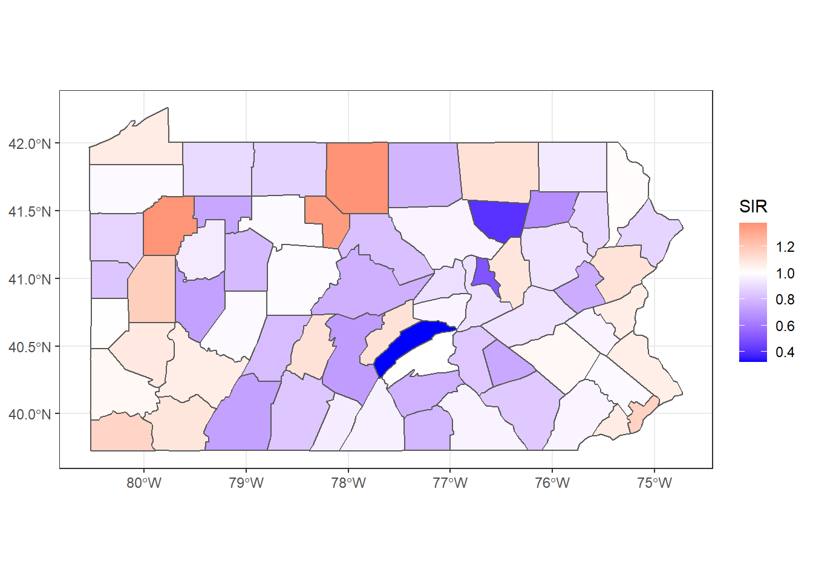
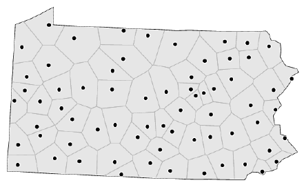

Areal units of observation are very often used when simultaneous observations are aggregated within non-overlapping boundaries.
Example: Lung cancer SIR (standardized incidence rate) in Pennsylvania

image credit: Paula Moraga
Proximity Data
By proximity, we mean closeness in ways that make sense for the data generation processes thought to be involved. In cross-sectional geostatistical analysis with point support, measured distance makes sense for typical data generation processes.
Example: Voronoi diagram of Pennsylvania

image credit: John Nerbonne
Support
By support of data we mean the physical size (length, area, volume) associated with an individual observational unit
It is possible to represent the support of areal data by a point, despite the fact that the data have polygonal support
When the intrinsic support of the data is represented as points, but the underlying process is between proximate observations rather than driven chiefly by distance between observations
risk of misrepresenting the footprint of the underlying spatial processes
Representing Proximity
Ideas for spatial autocorrelation
(graph theory) undirected graph, and its neighbors, or
spatialreg package now has the functions for constructing and handling neighbour and spatial weights objects, tests for spatial autocorrelation, and model fitting functions that used to be in spdep
The simplest form is by using triangulation, here using the deldir package
# get centroids and save their coordinatespol_pres15 |>st_geometry() |>st_centroid(of_largest_polygon =TRUE) -> coords # triangulation(coords |>tri2nb() -> nb_tri)
Neighbour list object:
Number of regions: 2495
Number of nonzero links: 14930
Percentage nonzero weights: 0.2398384
Average number of links: 5.983968
How Far Away are the Neighbors?
# results in metersnb_tri |>nbdists(coords) |>unlist() |>summary()
Min. 1st Qu. Median Mean 3rd Qu. Max.
246.6 9847.2 12151.2 13485.2 14993.5 296973.7
Sphere of Influence
The Sphere of Influence soi.graph function takes triangulated neighbours and prunes off neighbour relationships represented by edges that are unusually long for each point.
Distance-based neighbours can be constructed using dnearneigh, with a distance band with lower d1= and upper d2= bounds controlled by the bounds= argument
The knearneigh function for -nearest neighbours returns a knn object, converted to an nb object using knn2nb
Computation speed boost through dbscan package
The nbdists function returns the length of neighbour relationship edges
Min. 1st Qu. Median Mean 3rd Qu. Max.
246.5 6663.4 8538.0 8275.1 10123.9 17978.8
Here the largest first nearest neighbour distance is just under 18 km, so using this as the upper threshold gives certainty that all units will have at least one neighbour.
# maybe no neighborscoords |>dnearneigh(0, 16000) -> nb_d16# at least one neighborcoords |>dnearneigh(0, 18000) -> nb_d18
Adding 300 m to the threshold gives us a neighbour object with no no-neighbour units, and all units can be reached from all others across the graph.
Once neighbour objects are available, further choices need to be made in specifying the weights objects.
The nb2listw function is used to create a listw weights object with an nb object, a matching list of weights vectors, and a style specification
Because handling no-neighbour observations now begins to matter, the zero.policy= argument is introduced (default: FALSE)
n: number of observations
\(S_{0}\): sum of weights
The “B” binary style gives a weight of unity to each neighbour relationship, and typically up-weights units with no boundaries on the edge of the study area, having a higher count of neighbours.
The “W” row-standardised style up-weights units around the edge of the study area that necessarily have fewer neighbours. This style first gives a weight of unity to each neighbour relationship, then it divides these weights by the per unit sums of weights (caution: avoid no-neighbors)
If we wish to create an object showing to neighbours, where \(i\) is a neighbour of \(j\), and \(j\) in turn is a neighbour of \(k\), so taking two steps on the neighbour graph, we can use nblag (automatically removes \(i\) to \(i\) self-neighbours)
nb_q |>nblag(2) -> nb_q2
Returning to the graph representation of the same neighbour object, we can ask how many steps might be needed to traverse the graph?
igraph::diameter(g1) #where g1 is a graph object
[1] 52
We step out from each observation across the graph to establish the number of steps needed to reach each other observation by the shortest path (creating an \(n \times n\) matrix sps), once again finding the same maximum count.